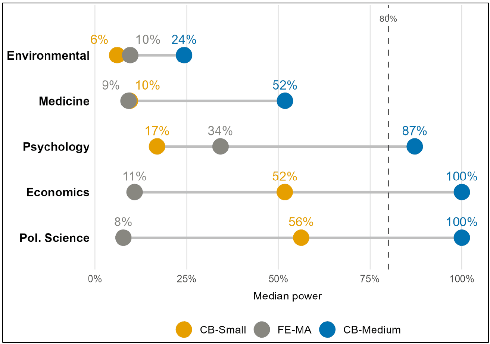

Abstract
Statistical power, the probability that a study detects a true effect, is a key determinant of the reproducibility of published research. Prior studies have documented low power within individual disciplines, but these estimates are difficult to compare: they span different fields, use different effect-size measures, and apply different methods, leaving no coherent cross-disciplinary picture. We analyze statistical power across five disciplines, environmental science, economics, medicine, political science, and psychology, using approximately 748,000 estimates from large meta-analysis collections. Benchmarking each estimate against Cohen's conventional small and medium effect-size thresholds, we find that published research in the meta-analyzed literature is substantially underpowered for small effects in every discipline. Under the medium-effect benchmark, median power exceeds 80 percent in psychology, economics, and political science, but remains well below that threshold in environmental science and medicine. We compare this benchmark approach with the Fixed-Effects Meta-Analytic (FE-MA) approach used in prior work. The two align in environmental science and medicine, and partly in psychology, but diverge sharply in economics and political science. We argue that heterogeneity, sign-mixing, and publication selection can make the FE-MA pooled estimate an unreliable assumed true effect for the individual studies in a literature, whereas the conventional benchmark is transparent and comparable across fields. Because it offers a transparent and uniform basis for comparing power across fields, we recommend that benchmark power be reported routinely, with FE-MA treated as a complement. These findings link low power to replication failures and suggest that the severity of the replication crisis varies across disciplines.

Reference: Yue Wang, Frantisek Bartos, Tom Coupe, Tomas Havranek, Sanghyun Hong, Zuzana Irsova, W. Robert Reed (2026), "The Power of Science: Statistical Power in Published Research Across Five Disciplines." University of Canterbury, Department of Economics and Finance, Working Paper No. 4/2026.
How to cite
Yue Wang, Frantisek Bartos, Tom Coupe, Tomas Havranek, Sanghyun Hong, Zuzana Irsova, W. Robert Reed (2026), "The Power of Science: Statistical Power in Published Research Across Five Disciplines." University of Canterbury, Department of Economics and Finance, Working Paper No. 4/2026.
BibTeX
@techreport{wang2026power,
author = {Yue Wang and Frantisek Bartos and Tom Coupe and Tomas Havranek and Sanghyun Hong and Zuzana Irsova and W. Robert Reed},
title = {The Power of Science: Statistical Power in Published Research Across Five Disciplines},
institution = {University of Canterbury, Department of Economics and Finance},
type = {Working Paper},
number = {4/2026},
year = {2026},
url = {https://repec.canterbury.ac.nz/cbt/econwp/2604.pdf},
}
Data and code
The paper states that its data will be deposited upon publication and that the code is on OSF. The OSF project is not yet public, so it is not linked here.